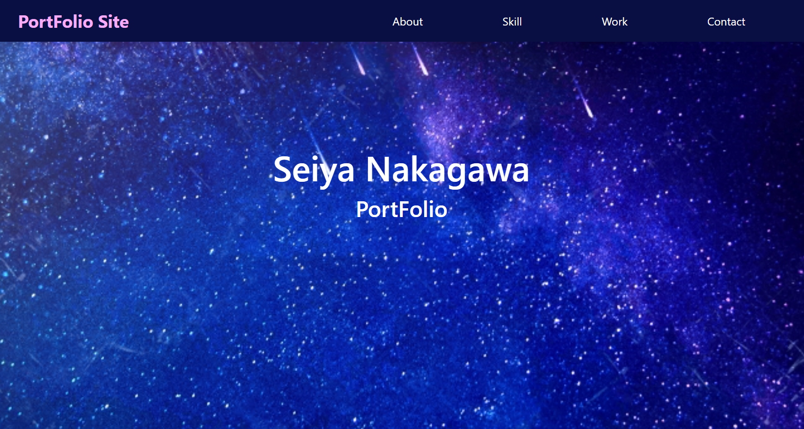
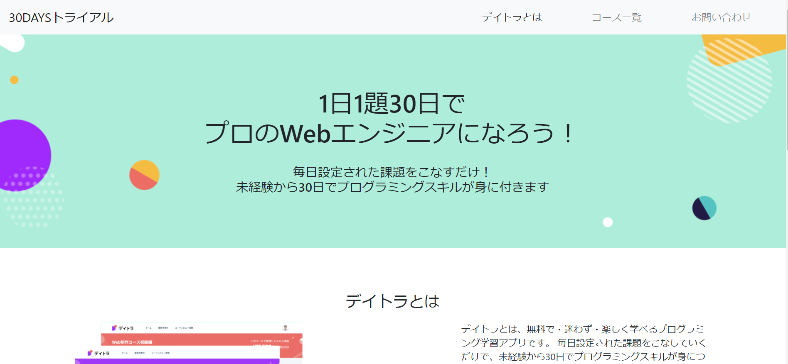
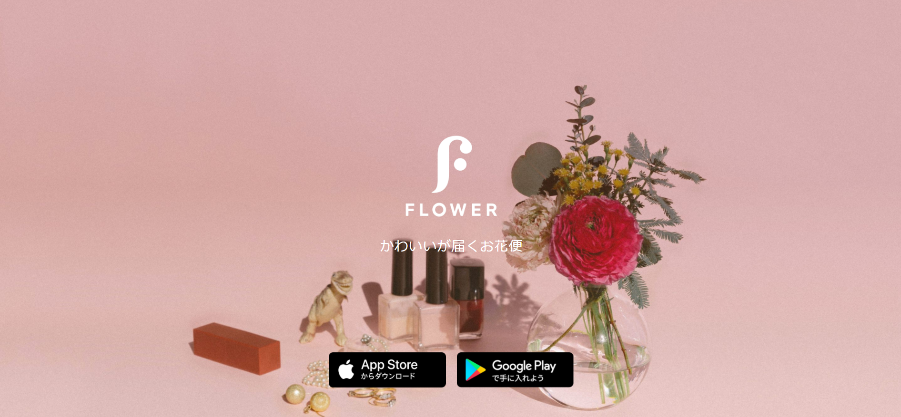

PortFolio Site
About
Skill
Work
Mail
About
Skill
Work
Mail
Seiya Nakagawa
PortFolio
About
名前
Seiya Nakagawa
年齢
32歳
職業
システムエンジニア
学歴
東海大学工学部生命化学科卒
所在地
神奈川県綾瀬市在住
趣味・特技
フットサル、サウナ、スポーツ観戦
自己PR
一部上場企業で現役エンジニアとして働きながら、 更なるスキルアップ向上のため、 Webサイト制作にチャレンジしています。
Skill
HTML & CSS
★★☆☆☆
ポートフォリオ、LPページ、ブログサイトを作成。 bootstrap習得。
WordPress
★★☆☆☆
ブログサイトを作成。 テンプレートからコード修正してカスタマイズ。
JavaScript
★☆☆☆☆
簡単な占いゲームを作成。
Java
★★☆☆☆
既存システムの改修。
ソースコードの解析、コード追加、修正。
フレームワークはStruts、Spring。
SQL
★★★☆☆
既存システムの改修。
テーブル追加、カラム追加、テスト時のデータ確認、 PL/SQLの改修。
Linux
★★★★☆
テスト・保守・運用・構築。
AWS
★★★☆☆
構築・テスト。
EC2、S3、Cloudfront、VPC。
資格
AWS Solutions Architect Associate
ORACLE MASTER Bronze Oracle Database 12
LinuC Level1
LinuC Level2
Work
ポートフォリオ

当サイト。デザインから作成。
寺＆神社ブログ
Wordpressで作成。
デイトラ

Progate学習直後に着手した、最初の模写コーディング。
Flower

ページ量を増やして、2回目の模写コーディング。
Mail
仕事の依頼や相談などがある方は、以下アドレス宛にお気軽にお問い合わせください。
aibdlnew1.work@gmail.com